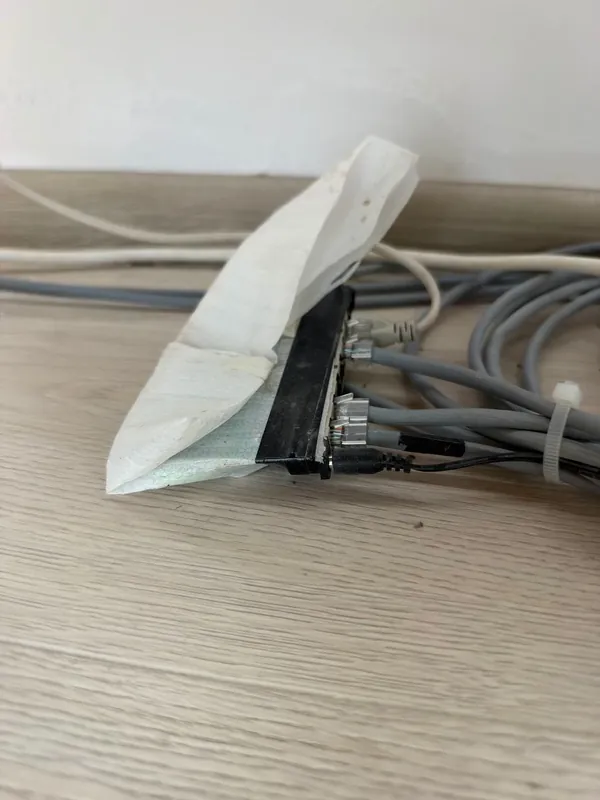
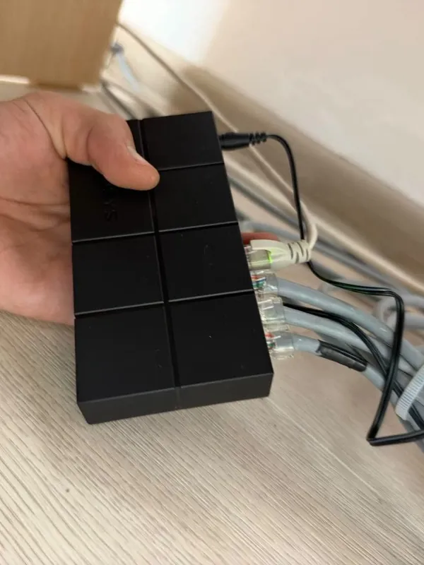
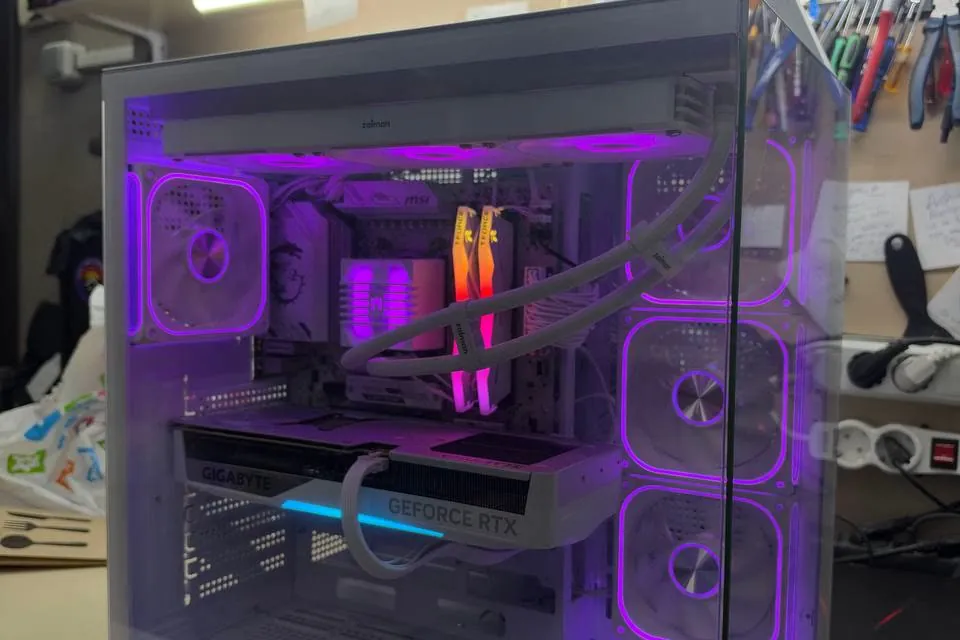

Bir huzurevi için ağ ve bilgisayarlar
Kırcaali'deki bir huzurevinin switch'ini değiştirdik, ağ ayarlarını düzelttik; bilgisayarını, monitörünü, yazıcısını, farelerini ve klavyelerini yeniledik.
Projelerimiz
Altı hizmetin tamamından bir kesit. Ayrıntılı vaka çalışmaları ve müşteri isimleri talep üzerine paylaşılır.


Kırcaali'deki bir huzurevinin switch'ini değiştirdik, ağ ayarlarını düzelttik; bilgisayarını, monitörünü, yazıcısını, farelerini ve klavyelerini yeniledik.

İki bilgisayar topladık — parça kutusundan çalışan makineye.
Kırcaali'deki bir kafe için canlı özel ürünler ve anında fiyat güncellemeli eksiksiz QR menü kurulumu.
Online rezervasyon formu ve otomatik onay e-postaları olan hızlı, mobil öncelikli bir site.
Telefon bildirimli ve iki haftalık yerel kayıtlı dört kameralı IP sistemi.
Beş iş istasyonunu yükselttik, ortak bir yazıcı kurduk ve ofis Wi-Fi'ını düzenledik.
Kırık bir braketi tersine mühendislikle çıkarıp tam bir yedek seriyi 3D yazıcıda bastık.
Bir aile evi için aydınlatma, ısıtma ve erişim kontrolü tek uygulamada.
24 saat içinde ücretsiz teklif